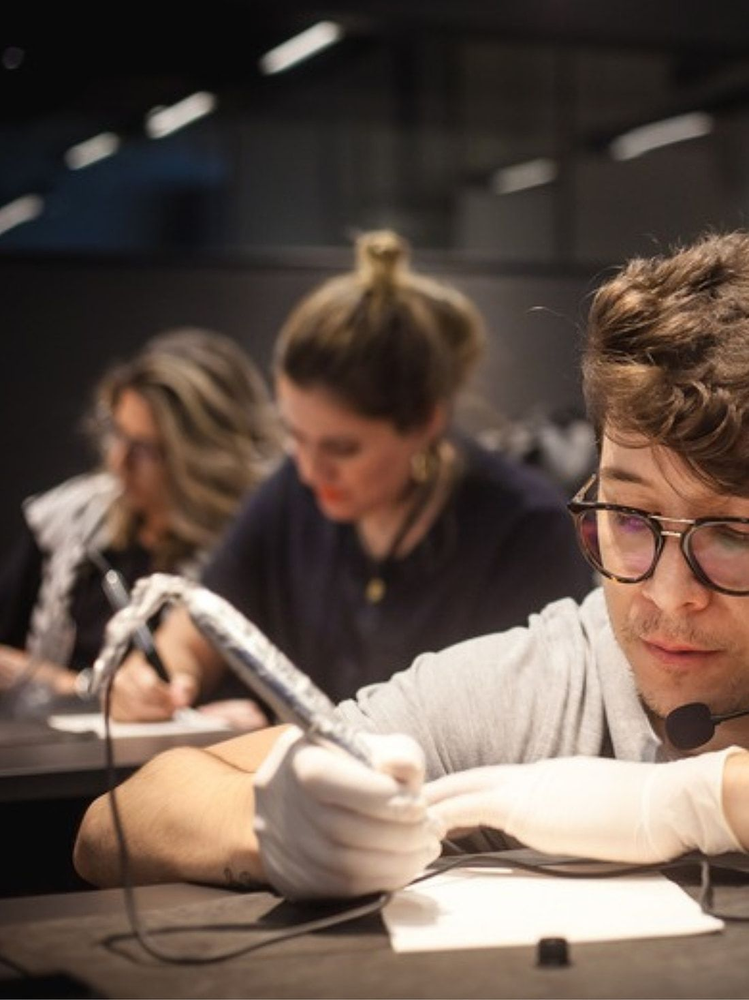
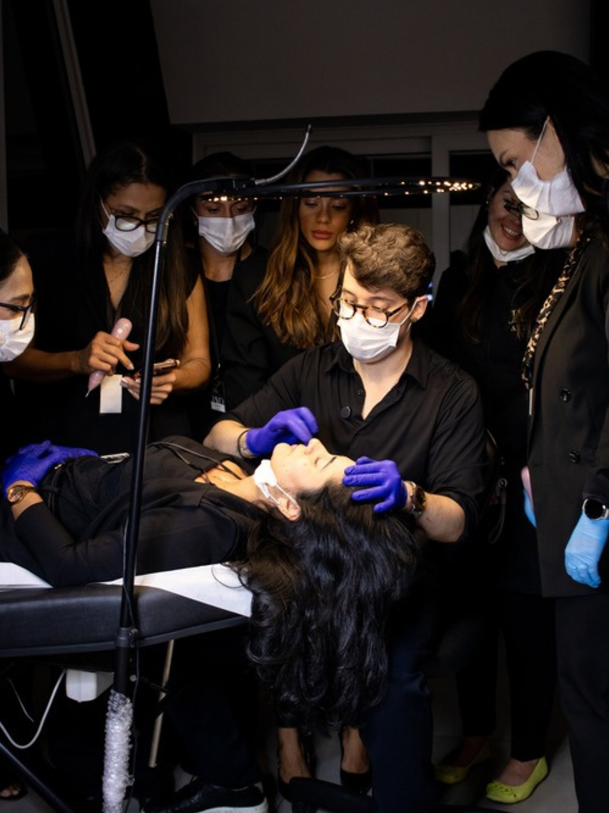
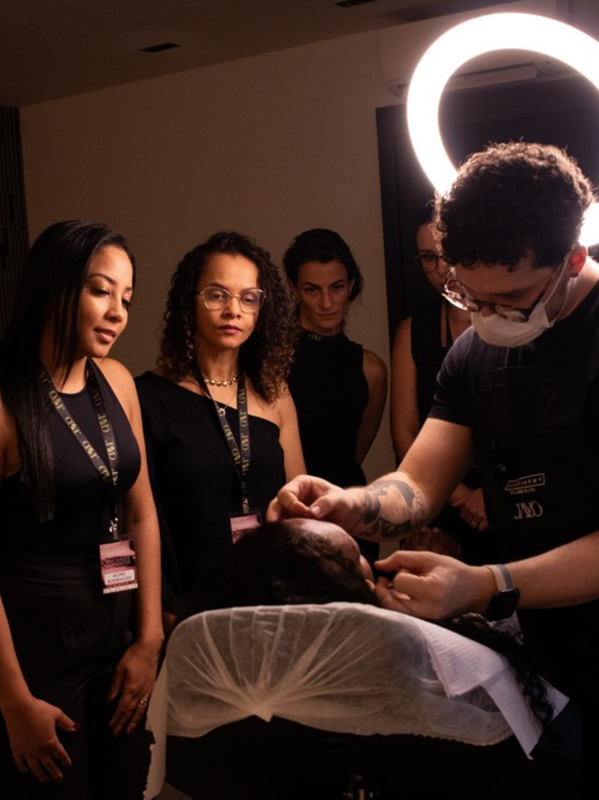
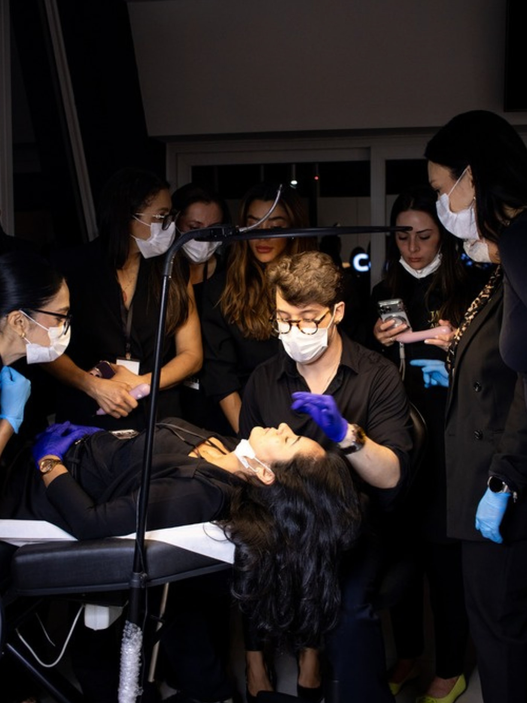
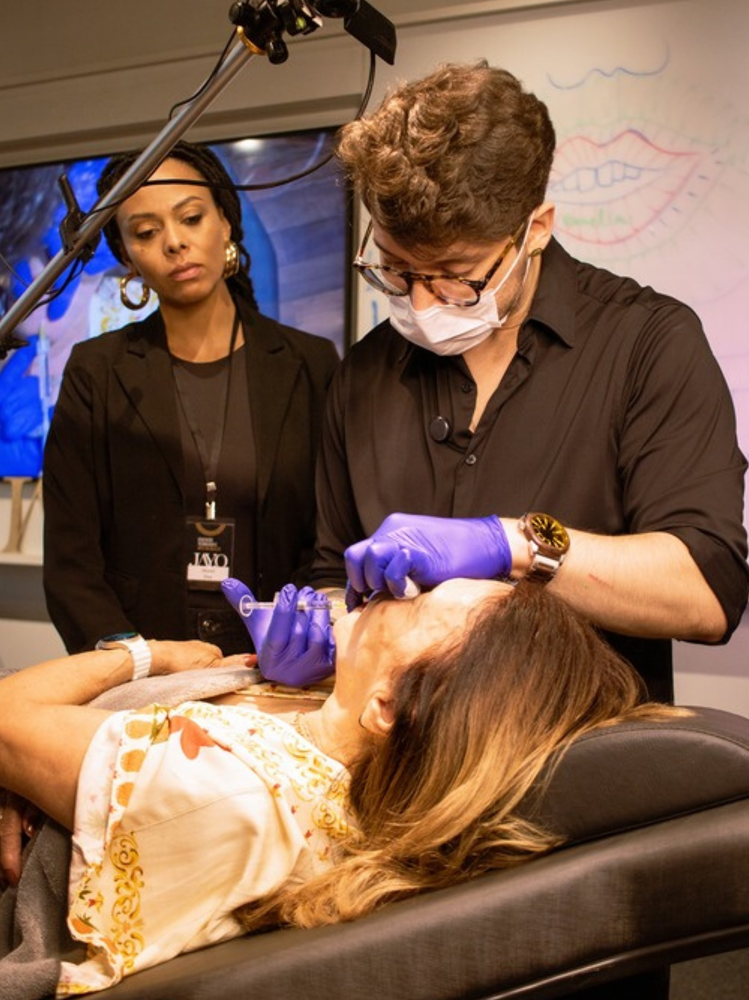

LP Academy · dobra "Aprenda onde a técnica acontece"
Opções para o card "A sala".
Todas são foto de ensaio da casa, já cortadas no 3:4 do card e na resolução
real do arquivo — nenhuma está ampliada. É só me dizer a letra.
Atual

AtualA bancada: você de microfone auricular executando, duas alunas
treinando na fileira de trás.
1100 × 1467
A

Opção AA turma inteira em volta da maca, todas acompanhando o
procedimento de perto. É a que mostra mais gente.
1400 × 1867 · original 4000 × 6000
B

Opção BQuatro alunas de crachá acompanhando sob o ring light.
A luz quente e a profundidade puxam pro cinematográfico.
1400 × 1867 · original 4000 × 6000
C

Opção CMesma cena da A, num instante mais aberto — dá pra ver a
sala e uma aluna filmando.
1400 × 1867 · original 3856 × 5784
D

Opção DPlano fechado: você executando com uma aluna ao lado e o
telão da aula atrás. Mais íntima, menos turma.
1400 × 1867 · original 4000 × 6000